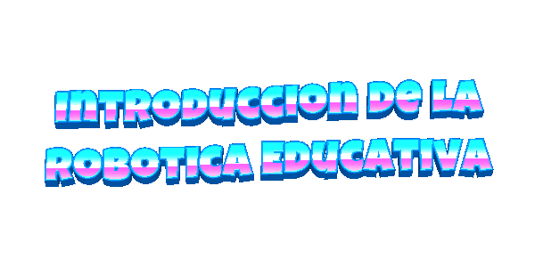
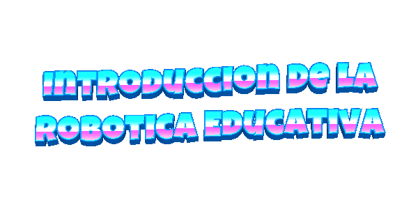
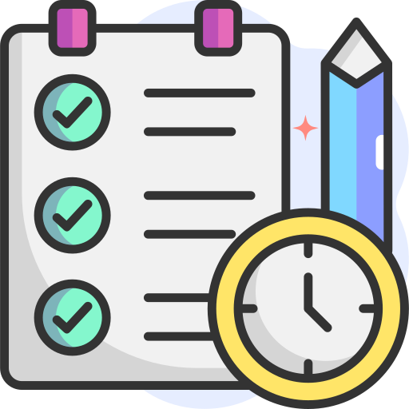

TEMA



Ofrecer a los docentes tanto conocimientos teóricos como prácticos sobre el uso de herramientas como Wokwi y mBlock, así como de componentes como la placa ESP32. Con esto, podrán diseñar y construir circuitos electrónicos sencillos, programarlos y aplicar sus habilidades para abordar problemas reales. Todo esto busca fomentar su creatividad, curiosidad y habilidades prácticas en STEM, motivándolos a explorar, aprender y desarrollar su potencial en el campo de la tecnología y la educación.
Herramientas en línea como Wokwi y mBlock: Es fundamental que los docentes tengan experiencia en el uso de estas plataformas.
Programación: Se recomienda que los docentes posean conocimientos básicos en lógica de programación, incluyendo conceptos como variables, tipos de datos, bucles, estructuras de control, funciones y estructuras de datos, para facilitar la enseñanza y el acompañamiento de los alumnos.
Matemáticas aplicadas a la electrónica: Es importante que los docentes tengan nociones básicas de electrónica y la capacidad para realizar cálculos relacionados con valores eléctricos.
Electrónica: Conocimientos básicos de componentes electrónicos, herramientas electrónicas y soldadura ayudarán a guiar a los estudiantes en la construcción de circuitos y prototipos.
Sistemas informáticos y tecnología de la información: Es recomendable que los docentes tengan conocimientos en sistemas informáticos y herramientas tecnológicas.
Obra publicada con Licencia Creative Commons Reconocimiento Compartir igual 4.0